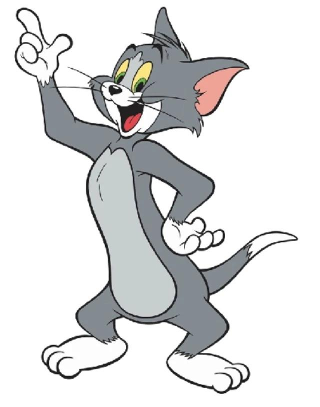

Tom passe beaucoup de temps à poursuivre Jerry, mais la petite souris réussit souvent à lui échapper grâce à sa rapidité et à son intelligence. Leurs aventures sont remplies de gags, de courses-poursuites et de situations amusantes. Même s'ils se disputent souvent, il leur arrive aussi de s'entraider face à un danger commun.

Tom est populaire parce qu’il fait rire avec ses échecs, sa détermination et ses aventures avec Jerry. Même s’il est souvent le perdant, c’est justement ce qui le rend amusant et attachant !